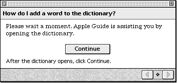

Legacy Document
Important: The information in this document is obsolete and should not be used for new development.
Important: The information in this document is obsolete and should not be used for new development.


Using Context Checks
Context checks are functions that verify certain conditions of the user's environment so that Apple Guide can dynamically skip or show certain panels to the user based on their appropriateness. These conditions can be tasks that the user needs to perform or conditions based on the user's environment, for example, whether a folder is open or a file is present. In either case, if a panel specifies that a certain condition must be true, you need to determine whether you can perform context checks on that condition.For example, your sequence can contain panels that instruct the user to open a window or click an item. If the user has already performed the task specified by a panel, there is no need for the user to view that panel. For each panel, therefore, you should use the <Skip If> command to verify whether the specified condition is true and if so, to tell Apple Guide to skip the panel. Similarly, your sequence can contain a branch that applies only to a specific condition that you can programmatically verify. When it does, you can use the <If> command to show the user that branch only if the specific condition is true. For more information, see "Designing Branches for a Specific Condition" on page 2-72.
Your sequence can also contain panels that you do not want the user to view unless a certain condition is true (for example, certain panels can require that a specific folder be open). For these panels, you should use the <Make Sure> command to verify that the specified condition is true before Apple Guide shows the associated panel to the user. If the condition is not true, you can specify that one of two panel types appear--an Oops or Continue panel--that work in different ways to make the condition true. These panels are described later in this section. For additional guidelines on creating these panels, see "Designing an Oops Panel" on page 2-66 and "Designing a Continue Panel" on page 2-67.
Apple recommends that you use context checks in your guide files wherever possible. Specifying context checks in your guide file generally occurs in four stages. You might have the skills and background to do this work yourself, or you might work with a team that includes instructional designers, scriptors, and developers. Here are the tasks you or your team need to accomplish:
- Determine those panels that require context checks in the early stages of designing your guide file.
- Determine whether panels with a context check are associated with an Oops or Continue panel. For Continue panels, you must also determine whether it is programmatically possible to perform the given task for the user.
- Create the code that checks the condition specified by the context check.
- Test whether the context checks for any user action (for example, selecting a menu command) still work properly if the user performs the action in the wrong order in the sequence.
This section explains how to analyze your panels to determine whether they require <Make Sure> and <Skip If> commands. It also describes how to design Oops and Continue panels. It then describes the order Apple Guides uses to evaluate context checks. For complete descriptions of all context checking commands, see the chapter "Guide Script Command Reference."
- Note
- Guide Maker provides a file, Standard Setup, that contains built-in context checks.

Comparison of Oops and Continue Panels
When the user clicks the right arrow to move to the next panel and the next panel is preceded by a <Make Sure> command, Apple Guide checks the condition associated with the <Make Sure> command before displaying the next panel. If the condition is false, you can specify that an Oops or Continue panel appear.An Oops panel tells the user that the condition (typically an action described on a previous panel) must be true for the user to continue to the next panel. A Continue panel offers to have Apple Guide do the condition that must be true before the user can go to the next panel; that is, do the action for the user. You can therefore use a Continue panel only if it is programmatically possible to perform the required action that makes the condition true. For guidelines, see "Designing an Oops Panel" on page 2-66 and "Designing a Continue Panel" on page 2-67.
- Note
- If you specify that a Continue or Oops panel appear for a certain condition--for example, the condition is false if a particular control panel is closed--you should specify the same result for all other panels in that sequence that contain the same condition. Also, you should not mix use of the Continue or Oops panels for the same condition.
Analyzing a Sequence for Context Checks
To determine the context checks for your guide file, go through each sequence, panel by panel, and consider these issues:
For example, assume you want to determine the context checks sequence for the SurfWriter topic "How do I add words to the dictionary?" shown in Figure 2-58.
- Does the panel tell the user to perform an action? Can you programmatically check whether the condition that results from this action is true? (For example, can you check whether a control panel is open?) If so, specify a <Skip If> command for that panel.
- Does that panel set up a condition that must be true for the user to use subsequent panels in the sequence? Can you programmatically check whether this condition is true? If so, specify a <Make Sure> command for that condition.
Figure 2-58 The SurfWriter sequence for adding a word to the dictionary
This sequence contains the typical panels for a topic that describes a task.
First, consider panel 1. Apple Guide should not skip an introductory panel in a sequence, because it prepares the user for the task ahead. This panel does not require a <Skip If> statement. Furthermore, you should not specify a <Make Sure> for the first panel of a sequence. Panel 1, therefore, requires no context checks.
- Panel 1 is an introductory panel that describes the purpose of the sequence --adding a word to the dictionary--to the user.
- Panels 2 and 3 are action panels that each contain a step that the user should perform to accomplish the task:
- Panel 2 instructs the user to open the SurfWriter dictionary.
- Panel 3 asks the user to type a word.
- Panel 4 is a closure panel that tells the user the task is done.
In contrast, panel 2 sets up a condition by telling the user to do an action (open the SurfWriter dictionary). You can verify whether this condition is true. You should therefore specify a <Skip If> command so that Apple Guide skips this panel if the SurfWriter dictionary is already open and then displays panel 3.
Panel 3 also tells the user to perform an action (type a word in the dictionary); here, a specific condition must be true (the SurfWriter dictionary must be open) for the user to perform this action. You should therefore specify a <Make Sure> command to verify that the SurfWriter dictionary is open before Apple Guide displays this panel. You can also specify a Continue panel if the <Make Sure> command results in a false condition. For example, Figure 2-59 shows the Continue panel that would appear if the user pressed the right navigation arrow on panel 2 without opening the SurfWriter dictionary.
Figure 2-59 A Continue panel for a condition in a SurfWriter sequence

(Notice that the Continue panel tells the user to wait until Apple Guide opens the SurfWriter dictionary.) This panel is associated with code (for example, an AppleScript command) that automatically opens the dictionary. After the user clicks the Continue button, Apple Guide then advances to panel 3 because the condition associated with the <Make Sure> command is true.
Alternatively, you can specify an Oops panel with the <Make Sure> command. For example, Figure 2-60 shows the Oops panel that would appear for the same condition.
Figure 2-60 An Oops panel for a condition in a SurfWriter sequence
If the user clicks OK without performing any other action, Apple Guide returns to panel 2, the first previous panel shown before the condition specified by the <Make Sure> command failed. If the user opens the SurfWriter dictionary and clicks OK, Apple Guide displays the next panel in the sequence.
Panel 4 does not depend on a condition being true and therefore requires no <Make Sure> command. In addition, Apple Guide should not skip a closure panel in a sequence, because it summarizes the task accomplished by the user. You should therefore not specify a <Skip If> statement for this panel. This panel therefore requires no context checks.
Evaluation of Context Checks
Apple Guide always evaluates context checks in a certain order, as shown in Table 2-3.If Apple Guide is moving forward through a sequence because the user clicks the right arrow, it evaluates <Skip If> commands before <Make Sure> commands. If Apple Guide is moving backward through a sequence (because the user is using the left arrow), Apple Guide ignores the <Skip If> and <Make Sure> commands and moves backward through panels regardless of their context checks. If the user clicks the OK button on an Oops panel without correcting the specified condition, Apple Guide returns the user to the first previous panel in the sequence. This panel is the first panel that Apple Guide finds, searching backward through the sequence, that meets one of two criteria: it does not have a <Make Sure> command specified for it, or it has a <Make Sure> command whose condition evaluates to
true.To find the first previous panel, Apple Guide searches backward through the sequence and checks each panel to see if it has <Make Sure> commands associated with it. If a panel does not have any <Make Sure> commands specified, Apple Guide displays the panel. If the panel does have <Make Sure> commands specified, Apple Guide evaluates whether each condition verified by the <Make Sure> command is true or false. If the conditions are all true, Apple Guide displays the panel. If the conditions are false, Apple Guide moves backward to the next panel. Apple Guide repeats this process until it finds a panel where one of the following conditions is true:
Apple Guide displays the first panel that meets one of these conditions to the user.
- The panel has no <Make Sure> commands specified.
- The conditions specified by the <Make Sure> command are all true for the panel.
- Apple Guide has reached the first panel of the sequence.
Figure 2-61 indicates the context checks for a Macintosh Guide sequence that describes how to change the sound on a Macintosh computer.
Figure 2-61 A sequence in Macintosh Guide for changing the beep sound
For this sequence, a Continue panel rather than an Oops panel appears whenever the user clicks the right arrow button on a panel where the specified condition is not true.
The introduction panel is the first panel in the sequence. Note that the third, fourth, and fifth panels all have a <Make Sure> command: the <Make Sure> command for the third panel specifies that the Control Panels folder be open and the <Make Sure> command for the fourth and fifth panels specifies that the Sound control panel be open.
Suppose that the user moves successfully through the first four panels without receiving an Oops panel; that is, the user opens the Control Panels folder and Sound control panel so that the conditions on the third and fourth panels are true. Now assume that, while viewing the fourth panel, the user closes the Control Panels folder and Sound control panel and then clicks the right navigation arrow. Because the next panel contains a <Make Sure> command that specifies that the Sound control panel should be open, Apple Guide displays an Oops panel. Assume that the user still does not open the Sound control panel but clicks the OK button on the Oops panel. Apple Guide now searches backward for the first previous panel in the sequence that either does not have a <Make Sure> command specified for it or that has a <Make Sure> command whose condition evaluates to
true.Apple Guide first goes back to the fourth panel, which contains a <Make Sure> command to specify that the Sound control panel be open. Because this condition is false, Apple Guide goes back to the third panel, which contains a <Make Sure> command to specify that the Control Panels folder be open. Because this condition is also false, Apple Guide goes back to the second panel. This panel does not contain a <Make Sure> command and is therefore the first previous panel that Apple Guide returns to.